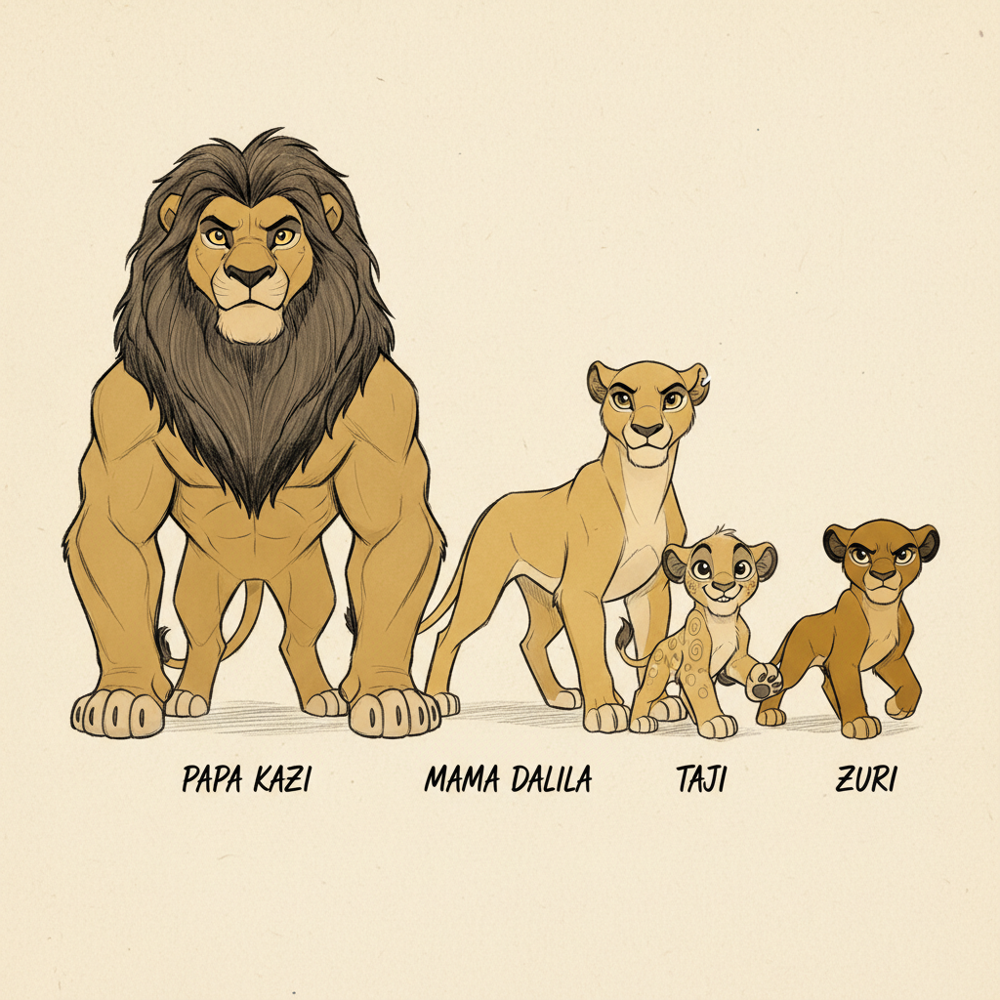
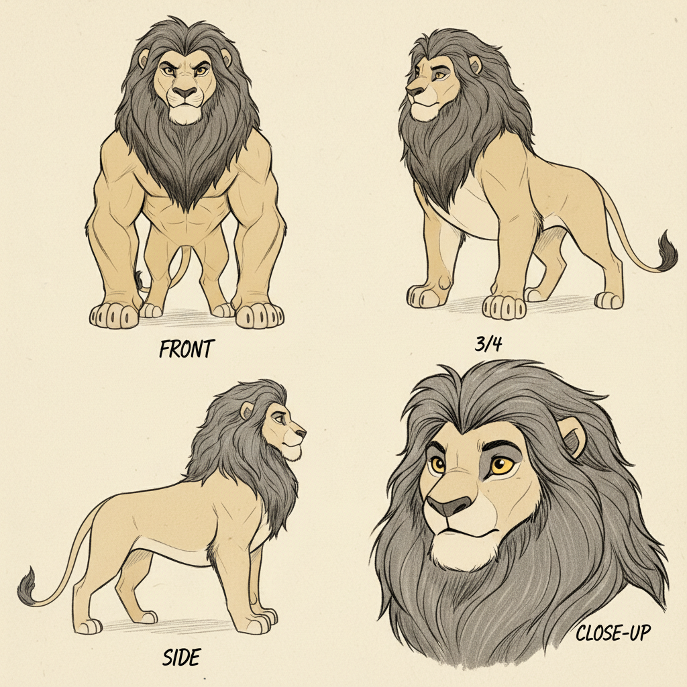
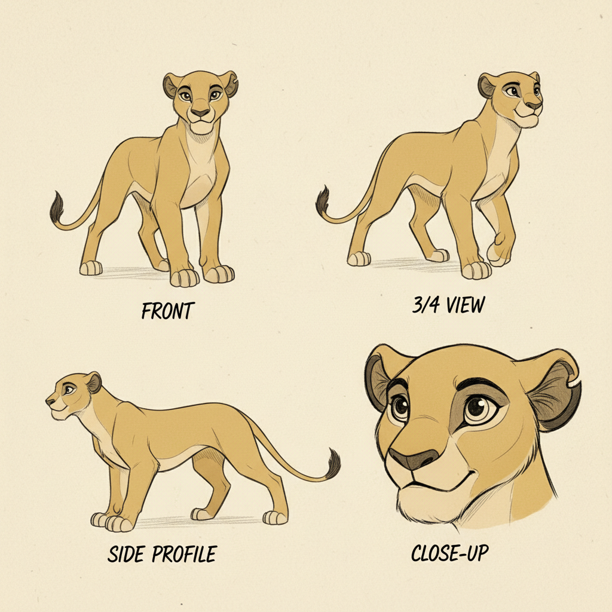
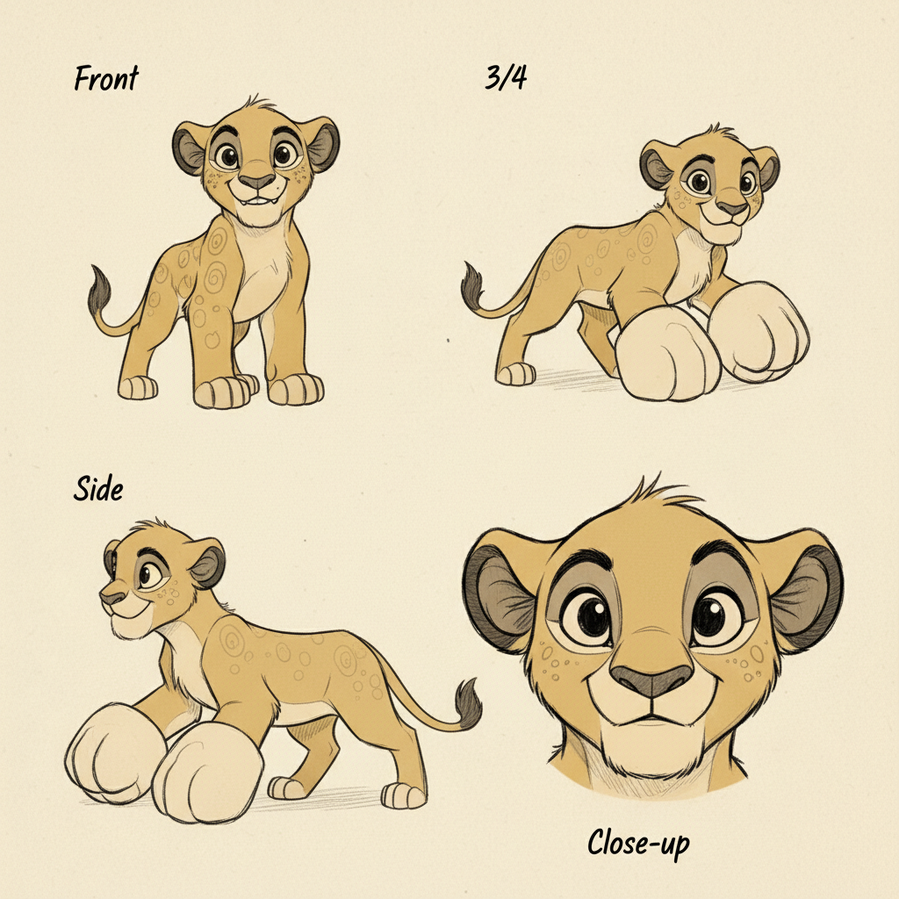
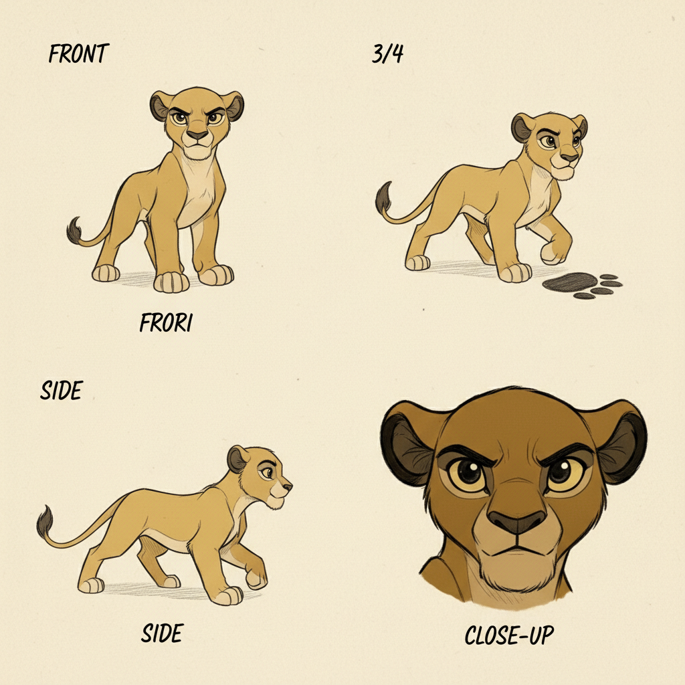
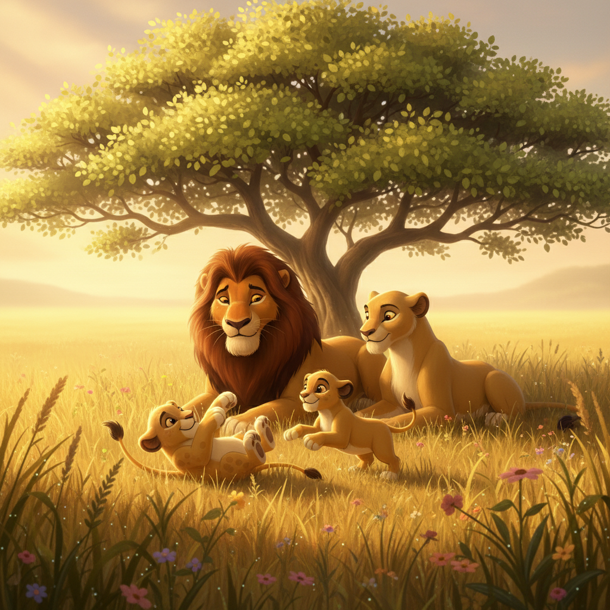
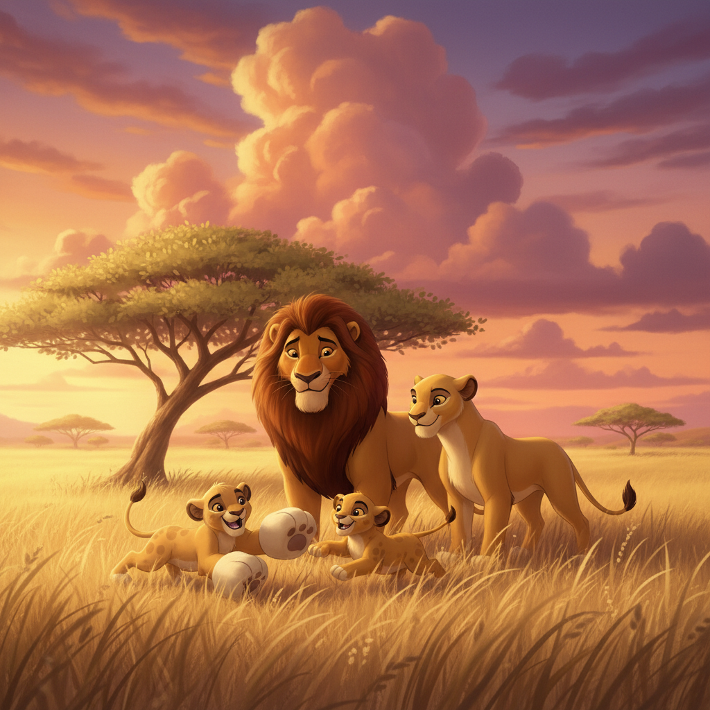
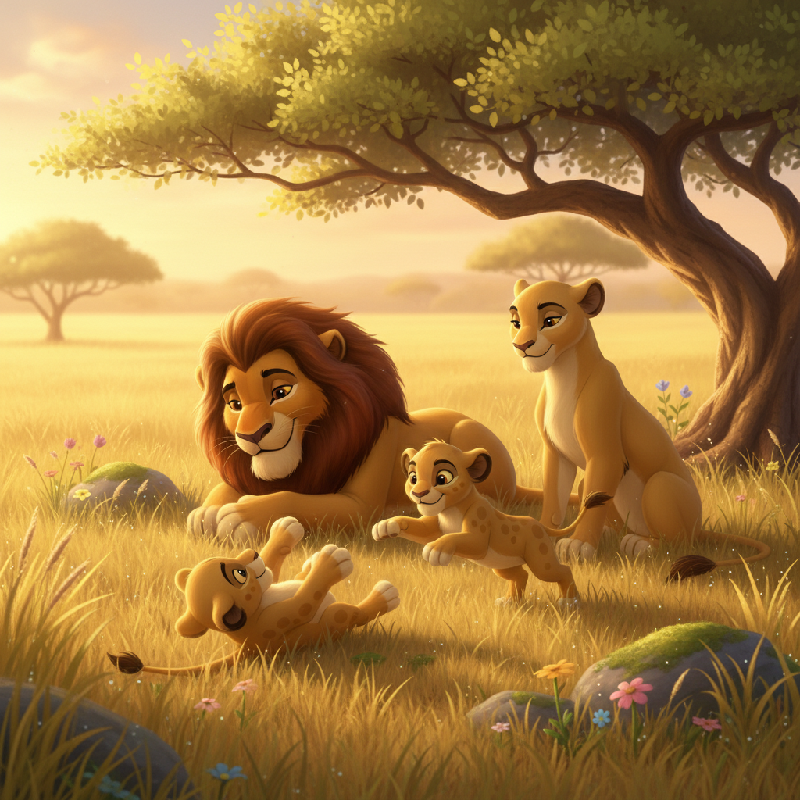
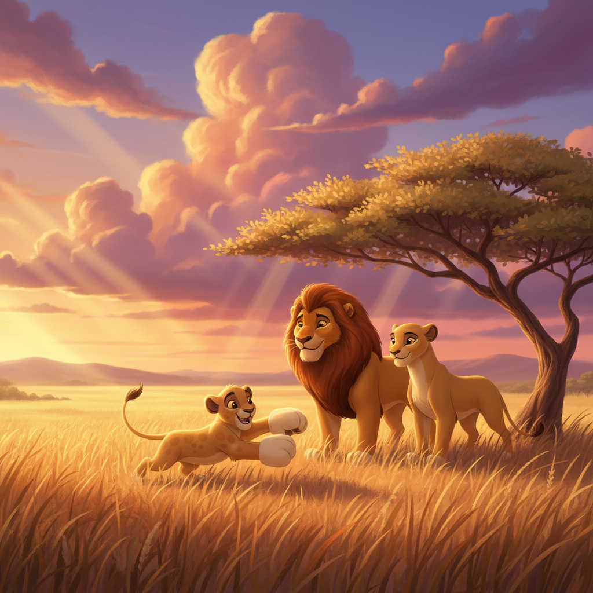

Lions: Kings of the Savanna
Follow the lion pride through a day on the African savanna — from Papa Kazi's mighty roar to cubs Taji and Zuri learning to stalk, hunt, and grow up in the warmth of their family
Preface
Welcome to the golden African savanna, where the most magnificent family in the animal kingdom lives — the lions! Lions are the only cats that live together in big families called prides, and every member has an important job to do.
In this adventure, you'll meet Papa Kazi with his enormous dark mane, Mama Dalila the greatest huntress on the plains, and their two playful cubs, Taji and Zuri. Together, they'll show you what it means to be part of a pride — a family that roars together, naps together, and loves together!
Did you know that lions sleep up to 20 hours a day? Or that a lion's roar can be heard from 5 miles away? Get ready to discover all the amazing secrets of the kings and queens of the savanna!
Art Direction
Pre-Production Pipeline
Step 0: Storyline
pending (0 attempts)
pendingStep 1: Unified Cast Sheet
approved (1 attempts)
ApprovedStep 2: Character Sheets
approved
Papa Kazi: approvedMama Dalila: approved
Taji: approved
Zuri: approved
Step 3: Mood Proposals
approved
Moods: translucency, lush-botanicalStep 1: Unified Cast Sheets
 approved.jpg (APPROVED)
approved.jpg (APPROVED)

unified-cast-v1.jpgStep 2: Papa Kazi Sheets

approved.jpg (APPROVED) sheet-v1.jpg
sheet-v1.jpg
Step 2: Mama Dalila Sheets
 approved.jpg (APPROVED)
approved.jpg (APPROVED)

sheet-v1.jpgStep 2: Taji Sheets
 approved.jpg (APPROVED)
approved.jpg (APPROVED)

sheet-v1.jpgStep 2: Zuri Sheets
 approved.jpg (APPROVED)
approved.jpg (APPROVED)

sheet-v1.jpgStep 3: Pixar Mood Proposals
 APPROVED
APPROVED

1-translucency-botanical
2-epic-intimate
3-golden-botanical
5-epic-goldenCharacter Cast
Papa Kazi
Magnificent male lion father with a huge dark brown mane, golden amber eyes, powerful muscular build, proud protective stance
kazi-portrait.jpgMama Dalila
Sleek golden lioness mother, skilled huntress, athletic muscular build, warm caring eyes, small notch on left ear
dalila-portrait.jpgTaji
Male lion cub, curious and playful, lighter golden fur with faint spots still visible, big oversized paws he hasn't grown into yet
No portraitZuri
Female lion cub, brave and bold for her size, slightly smaller than Taji, darker golden fur, always trying to keep up with the adults
No portraitScene Plan (11 scenes)
Meet Papa Kazi, the Mighty King
Standing on a rocky hill overlooking the golden savanna, Papa Kazi is the most magnificent lion you have ever seen! His huge dark brown mane flows around his face like a crown, making him look twice as big as he already is — and he is BIG. His golden amber eyes see everything — every bird, every rustle in the grass. When Kazi yawns, you can see teeth as long as your fingers! But don't worry — this mighty king has the gentlest heart. 'My job,' he rumbles in his deep voice, 'is to keep my family safe. And I always will.'
Mama Dalila, the Great Huntress
While Papa Kazi is the biggest and loudest, Mama Dalila is the cleverest and fastest. She is a sleek, golden lioness with strong muscles that ripple under her smooth fur. See that little notch on her left ear? She got that from a brave hunt long ago, and she wears it proudly. Dalila can sneak through the tall grass without making a single sound. She can run as fast as a car on a neighborhood street! 'Being strong isn't just about roaring,' she tells the cubs. 'It's about being smart, patient, and working together.'
Cubs at Play: Taji and Zuri!
POUNCE! TUMBLE! ROLL! Meet Taji and Zuri, the two funniest, bounciest lion cubs on the entire savanna! Taji is the bigger one — his golden fur still has faint baby spots, and his paws are ENORMOUS compared to his body. He hasn't grown into them yet! He's always getting into trouble, sneaking up on butterflies and falling over his own big feet. Little Zuri is smaller but OH so brave! She has darker golden fur and she is always trying to keep up with the grown-ups. Right now, she's pounced on Taji's tail and WON'T let go! 'That's MY tail!' Taji squeals, and they both tumble into a giggling heap.
Learning to Stalk
'Lesson one,' Mama Dalila whispers. 'Get LOW.' She sinks into the golden grass until she's nearly invisible. Only her eyes peek above the tips of the grass, watching. 'Now you try.' Zuri drops down perfectly — her darker fur blends right into the shadows. 'Excellent, Zuri!' Mama purrs. Taji tries too, but his big bottom sticks up like a golden hill. A bird lands right on it! 'Taji!' Zuri giggles. 'You're supposed to be HIDING!' Taji grins his goofy grin. 'I was testing if the bird would notice. It's... research!' Mama laughs softly. 'Practice makes perfect, my darlings.'
Mama's Amazing Hunt!
Today, the cubs get to WATCH Mama hunt for the very first time! They hide in the tall grass with Papa Kazi, eyes wide. Mama Dalila creeps through the grass, so low and so quiet, she's like a golden shadow. Step... step... step... Then — WHOOOOSH! Mama EXPLODES forward like a golden rocket! Her powerful legs eat up the ground. Dust flies everywhere! She's SO FAST! The cubs' mouths drop open. 'Is Mama FLYING?!' Taji gasps. Papa chuckles proudly. 'Your mother is the finest huntress in all the land. She feeds our whole family with her skill and bravery.'
The Mightiest Roar!
As the sun turns the sky orange and purple, Papa Kazi climbs to the highest rock. He takes a DEEP breath, his enormous chest expanding, his great dark mane bristling in the wind. Then — RRRROOOOAAARRR! The ground seems to SHAKE! Birds scatter! The grass RIPPLES! Papa's roar rolls across the savanna like thunder, on and on and on. It can be heard FIVE MILES away! 'AGAIN! AGAIN!' the cubs cheer. Taji tries his own roar — 'Mew!' Zuri tries too — 'Mip!' Papa laughs so hard his mane shakes. 'Don't worry, little ones. Your roars will come. And they will be MIGHTY.'
The Great Big Nap
If there's one thing lions are CHAMPIONS at, it's SLEEPING! Lions sleep up to TWENTY hours a day — that's almost the whole day! And the way they sleep is the cutest thing ever. Papa Kazi lies on his back under the big acacia tree, his huge paws in the air, snoring like a rumbling engine. Taji is curled up right on Papa's fluffy belly, rising and falling with each giant breath. Zuri is tucked between Mama and Papa, purring in her sleep. Mama Dalila has her paw draped gently over both cubs. One big, warm, furry pile of love. 'Shhhh,' the wind whispers. 'The kings are sleeping.'
The Watering Hole
When the afternoon heat cools, the whole family walks to the watering hole. It's like the neighborhood park of the savanna — everyone comes here! Papa Kazi walks in front, his dark mane swaying. The zebras and giraffes see him coming and step back politely. 'Good evening, Kazi!' a giraffe nods from a safe distance. At the water's edge, the whole family drinks together — lap, lap, lap. Taji sees his reflection and POUNCES on it — SPLASH! He's soaking wet. 'I caught a lion!' he announces proudly. Everyone laughs — even the zebras.
Papa's Night Patrol
While the family sleeps under the stars, Papa Kazi is on patrol. He walks the edges of their territory, his golden eyes glowing softly in the moonlight. Every few minutes, he lets out a low, rumbling roar — not his big roar, but a gentle one that says: 'I am here. My family is safe.' The sound travels across the dark savanna, and every animal for miles knows — this land belongs to Kazi. Back at the sleeping spot, the cubs stir. 'Is that Papa?' Zuri murmurs sleepily. 'Yes,' Mama whispers. 'Papa is watching over us. Go back to sleep, my love.' And they do, feeling perfectly safe.
Growing Bigger Every Day!
The days turn to weeks, and the weeks turn to months, and OH how Taji and Zuri have GROWN! Taji's big paws finally match his body, and something exciting is happening — tiny tufts of fur are growing around his neck. 'Is that... a MANE?' he asks Papa, eyes shining. Papa examines it seriously. 'Why, I believe it is! A fine mane is beginning, son. It will grow big and strong like mine.' Zuri has grown sleek and fast like Mama. She can already stalk a grasshopper without making a sound. 'My little huntress,' Mama beams. The cubs aren't so little anymore!
Our Pride, Our Family
As the golden sun melts into the African horizon, the family climbs to their favorite rocky hill. Papa Kazi sits tall in the center, his magnificent mane catching the last warm light. Mama Dalila leans against him, her notched ear a badge of honor. Taji sits up straight, trying to look as regal as Papa. Zuri sits close to Mama, eyes full of dreams. Below them, the whole savanna stretches out — golden, endless, and beautiful. 'This is our home,' Papa says, his deep voice full of love. 'And we are a pride — a family. We roar together, hunt together, sleep together, and love together. No matter what comes, we face it as one.' And somewhere across the savanna, a distant lion roars. And Kazi roars back. Always.
Viewer Details
The Mighty Mane
Look at Papa Kazi's incredible mane! A lion's mane is made of thick, coarse hair that grows around the face, neck, and shoulders. The darker the mane, the healthier and stronger the lion! Kazi's dark brown mane tells everyone he is in his prime. The mane makes him look much bigger than he really is, which scares away rivals. It also protects his neck during fights. No two lion manes are exactly alike — each one is as unique as a fingerprint!
Retractable Claws
Lions have an amazing superpower — retractable claws! When walking, their sharp claws are tucked inside soft, furry paw pads, keeping them quiet and their claws razor-sharp. But when hunting or climbing, the claws pop out like hidden knives! Each claw can be up to 1.5 inches long and curved like a hook. This retractable design means their claws never get dull from walking on hard ground. Lions are one of the few cats that can't fully retract their claws — cheetahs can't at all!
Whisker Spot ID
Did you know that every lion has a unique pattern of whisker spots? The small dark dots on a lion's muzzle where each whisker grows form a pattern that is different for every single lion — just like human fingerprints! Scientists use these whisker spot patterns to identify individual lions in the wild. Next time you see a lion, look closely at the dots on its muzzle — no other lion in the world has the exact same pattern!
Sandpaper Tongue
A lion's tongue is covered in tiny backward-pointing barbs called papillae, making it rough like sandpaper! These barbs are made of the same material as your fingernails. The rough tongue helps lions scrape every last bit of meat from bones, and it works like a comb for grooming their fur. When Mama Dalila licks her cubs clean, it's like a gentle scrubbing brush! One lick from a lion's tongue could scratch your skin — but to the cubs, it feels like the warmest, most loving bath.
Fun Facts
Champion Sleepers
Lions sleep up to 20 hours a day! That makes them one of the sleepiest animals on Earth. They rest so much because hunting takes enormous energy — a single hunt can use up all their strength. So when they're not hunting or eating, lions spend their time dozing in the shade, cuddling with family, and taking the world's longest naps. Even their name in some African languages means 'the lazy one'!
The 5-Mile Roar
A lion's roar is the loudest of any big cat and can be heard from 5 miles (8 kilometers) away! That's like roaring at one end of town and being heard at the other end. Lions roar to communicate with their pride, to warn rivals to stay away, and to find family members in the dark. They have a special bone in their throat called the hyoid bone that lets them produce such incredibly deep, powerful sounds.
Girl Power Hunters
In a lion pride, the lionesses do most of the hunting! They work together as a team, using clever strategies — some lionesses chase the prey toward others waiting in ambush. Lionesses are faster, lighter, and more agile than male lions, whose big heavy manes would slow them down and make them easy to spot. The males have a different job — they patrol and protect the territory so the family is safe.
Spots That Disappear
Lion cubs are born with spotted fur! These faint rosette-shaped spots help baby lions hide in the dappled shade of bushes and grass, camouflaging them from predators while they're small and vulnerable. As the cubs grow bigger and stronger, their spots gradually fade away until they have the smooth golden coat of an adult lion. Some lions keep very faint spots on their belly even as adults — look closely next time!
Hidden Generation Sections
MACRO CLOSE-UP of a magnificent lion's dark brown mane — showing the thick, coarse texture of individual hairs, the way ...
Ref: meet-kaziMACRO CLOSE-UP of a lion's paw showing retractable claws — one paw with claws retracted (soft furry paw pads visible) ne...
Ref: meet-dalilaMACRO CLOSE-UP of a lion cub's muzzle showing the unique pattern of whisker spots — small dark dots where each whisker e...
Ref: meet-cubsMACRO CLOSE-UP of a lion's tongue showing the rough papillae — tiny backward-pointing barbs that cover the surface, maki...
Ref: meet-kaziEducational illustration showing a lion sleeping in various hilarious positions — on its back, draped over a branch, bel...
Using the lion from reference, educational illustration showing sound waves emanating from a roaring lion, traveling acr...
Ref: meet-kaziUsing the lioness from reference, educational illustration showing a team of lionesses working together in a coordinated...
Ref: meet-dalilaUsing the cubs from reference, educational illustration showing a lion cub with visible spots next to an adult lion with...
Ref: meet-cubs